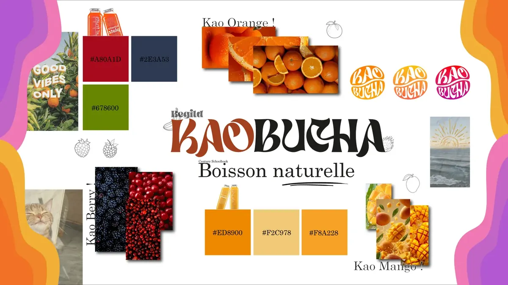
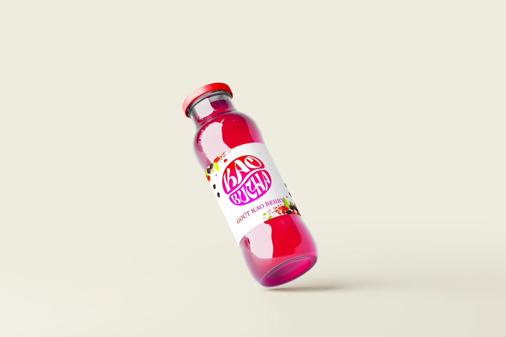
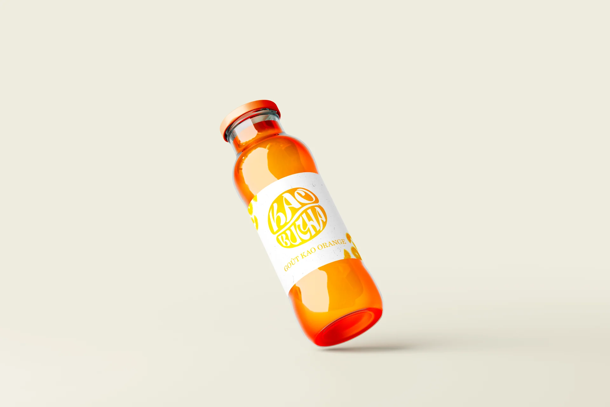
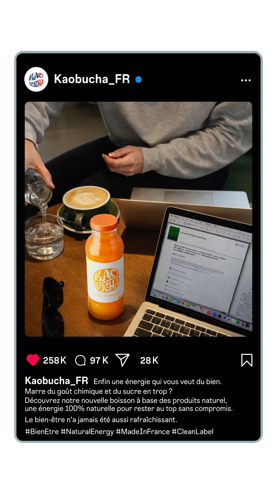
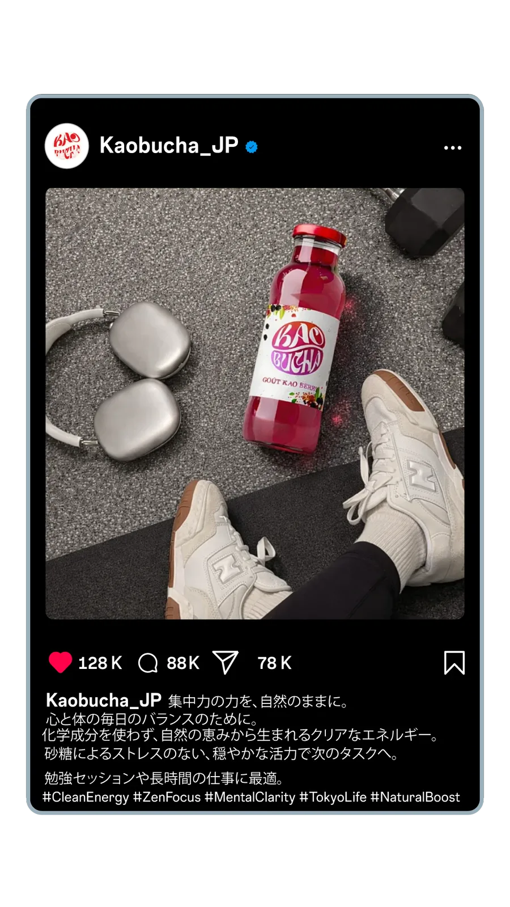
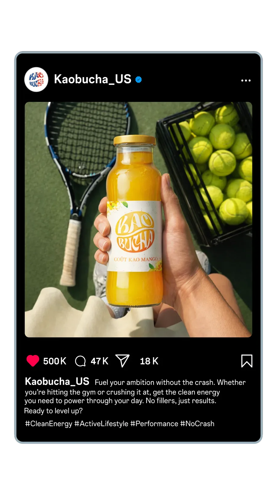

Le point de départ
SAE 1.02, BUT MMI. Il fallait créer de bout en bout l'identité visuelle et numérique d'une marque de boisson qui n'existait pas encore : Kaobucha. Le produit : une boisson énergisante sans alcool, composée de produits 100% naturels.
Le projet ne s'arrêtait pas à la France. Il impliquait aussi les États-Unis et le Japon, donc une stratégie marketing et des créations graphiques adaptées à chacun de ces marchés.
- Contexte : 1re année de BUT MMI, IUT de Troyes (URCA), 2025-2026
- Rôle : Créativité & Branding
- Enjeu : une stratégie pour trois marchés
- Outils : Photoshop, Illustrator
Direction artistique
L'esthétique de Kaobucha reste naturelle, fraîche et organique. On voulait s'écarter des codes agressifs des boissons énergisantes pour montrer une vitalité plus douce.

Trois saveurs, trois packagings
Chaque saveur a son packaging, avec la couleur et l'énergie de ses ingrédients.
Saveur Mango
L'énergie tropicale, dans une palette chaude et vibrante.

Saveur Berry
Les fruits rouges et leurs antioxydants, dans un ton profond et plus mystérieux.

Saveur Orange
Le coup de fouet vitaminé qu'on attend, en plus lumineux et rafraîchissant.
Trois marchés, trois stratégies
Pour entrer sur trois marchés, nous avons défini des personas pour chacun et adapté nos publications aux réseaux sociaux de chaque pays.

Marché Français
L'art de vivre et l'élégance, avec la composition naturelle "Made in France".

Marché Japonais
Une esthétique kawaii et moderne, avec la boisson comme appui dans une journée chargée.

Marché Américain
Le mode de vie actif, le fitness et l'esprit côte ouest.
Le rendu du projet
La conception et la stratégie marketing tiennent dans ce dossier :